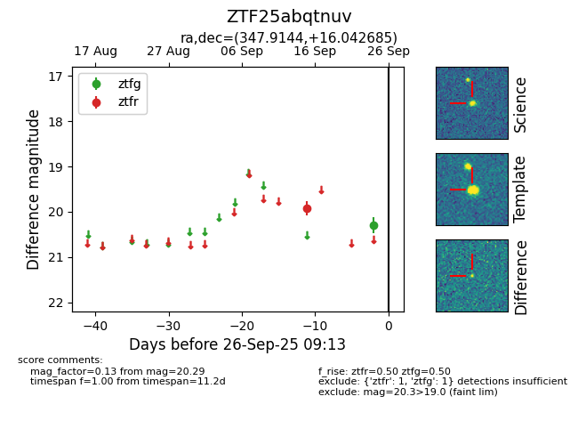

FINK: ZTF25abqtnuv
Lasair: ZTF25abqtnuv
ALeRCE: ZTF25abqtnuv
ZTF25abqtnuv (ztf,fink)
equatorial (ra, dec) = (347.9144,+16.04268)
galactic (l, b) = (90.7179,-40.50572)

last ztfg=20.29, ztfr=19.92
1 ztfg, 1 ztfr detections